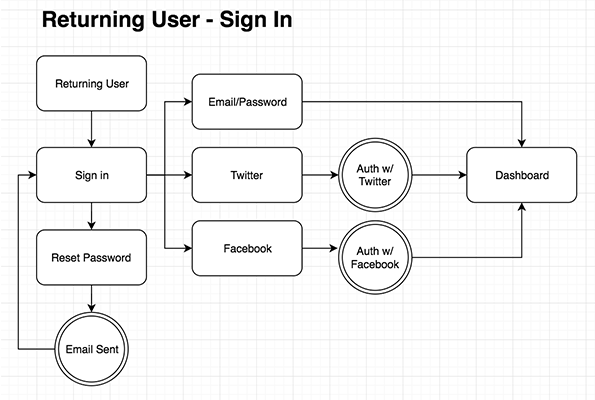
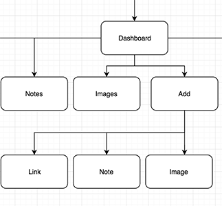
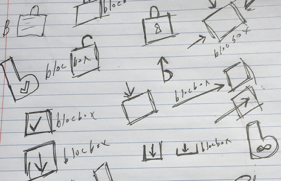
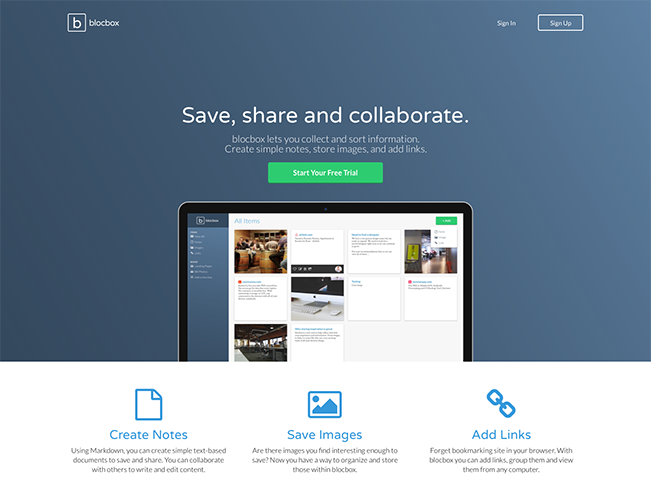

Save. Share. Collaborate. With those few keywords, the purpose of Blocbox was established. Cloud-based file sharing applications are not uncommon, but this project aimed to create a product that was targeted specifically toward creative people. A specific niche was identified, and I was tasked with creating a product that could serve as an alternative to popular sites such as Dropbox.
Knowing there’s no shortage of competition in the file-sharing space, the best place to start was to look at the services that are the most popular. With a competitive analysis I was able to identify some key areas that could be improved on or gaps that could be filled.
To ensure the project met the needs of users, I reached out to them directly with a short survey. From this I was able to gather essential information such as user needs, user behavior and demographics. Here are some of the findings from my preliminary research and survey:
Based on the survey results, I was able to start thinking about how different types of users would interact with Blocbox. To help validate these concepts, I created several personas that could guide the creation of the product.
With several personas established, I started to narrow the product with user stories to focus on a minimum viable product. Going through the list of user stories, I also sorted them by priority so the design and development process could move quickly and smoothly.
Knowing the features the Blocbox project should focus on, I started to map them creating user flows for each piece. Because there is substantial competition in this space, the user flows helped me find areas that could be simplified or improved upon.
The sitemap for Blocbox was very straightforward thanks to the areas I had identified as high priority. However, this step was still important to make sure nothing was left out.
Thanks to the amount of advance preparation done for Blocbox, I was able to start putting together some rough designs for key pages with Balsamiq. The areas I focused on were: homepage, onboarding, dashboard and account settings.
Blocbox now had a basic look and feel that could help inform the overall branding. Knowing this was a professional product, I selected a blue color palette that would convey a sense of trust. Additionally, I selected fonts that were simple and easy to read to keep with the feel of professionalism.
Blocbox was starting to come together, but to have a complete identity it needed a logo. After a page or two of sketches, I decided simplicity would be best in this case. Based on my initial research, users wanted a product that was simple and easy-to-use and the brand identity should reflect that.
Before jumping into the final designs, I put together some black and white prototypes for user testing. While I didn’t have an in-person focus group, I still created a script for my testing that could help users focus on the features I was targeting and guide them through the prototype.
The results of the user testing showed that the product was on-track with the features I had focused on. Knowing this I started to create the final designs in Sketch.
Though some projects only require designs and a prototype, I wanted to get the developers off to a head start by creating some of the key pages with HTML and CSS. To take a closer look at the code, here’s the link to the Blocbox GitHub repo.
Though Blocbox was one of the first UX projects I created from start to finish, the importance of research and user testing was quickly evident. The original specs asked for the ability to login through Facebook and Twitter accounts. However, the feedback from users was clear. They did not trust using those accounts or did not want to associate them with this particular product.
With that information, I was able to cut those from the design and development process and focus on a simple login process. Had I not conducted as much user testing, this could’ve slowed down the progress with unnecessary, additional work.
Even when there are similar products on the market, careful analysis and research can help identify gaps in user experience that can be capitalized on. The biggest challenge in creating Blocbox was differentiating from the well-known products already available.
Through my digital marketing experience, I’ve been involved in many pieces of both the design and development project. However, Blocbox was the first project I completed entirely on my own from start to finish. This was exciting and encouraging for my UX/UI design career going forward. I had a great time with the design process and revealed a career path that was both fun and rewarding.
Brandon Farestad-Rittel
bfarestadrittel@gmail.com
Denver, CO